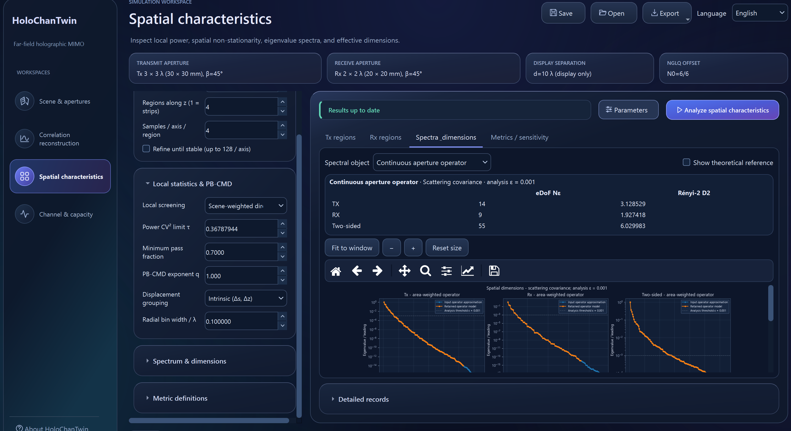
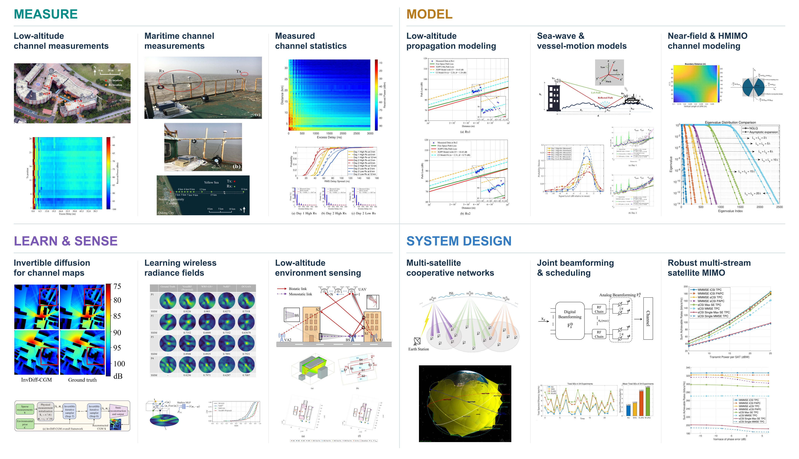

SHANGHAI JIAO TONG UNIVERSITY
Advancing Wireless Propagation Research
Simulation platforms, multimodal datasets, scientific models, and reproducible research.
- Site page views
- —
- Dataset download clicks
- —
- Software repository clicks
- —

Simulation Platforms
Software overviews, usage guides, and downloads

Multimodal Datasets
Explore PanoLAMP and MiSAIL

Research & Publications
Scientific models, papers, and research results
Illustrative cover
Tutorials & Videos
Getting started, walkthroughs, and academic talks
ABOUT THE GROUP
Connecting simulation,
data, and wireless discovery.
Led by Shu Sun at Shanghai Jiao Tong University, our research spans channel measurements and modeling, AI for wireless systems, integrated sensing and communication, holographic MIMO, and reconfigurable intelligent surfaces.